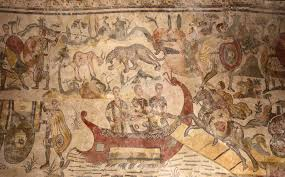

Стародавній період — це етап в історії людства, що слідує за передісторією і триває від появи писемності до падіння західної Римської імперії. Він розпочався приблизно 3-5 тисяч років тому з розвитком перших цивілізацій у Месопотамії, Єгипті, Індії та Китаї. Протягом Стародавнього періоду людство пережило значні зміни в соціально-економічній організації. Стародавній період включає в себе кілька важливих етапів, таких як античність, що характеризується розвитком грецької та римської культури, та етапи ранньої цивілізації, де з'являються держави з централізованою владою. У цей час також з'являються такі важливі інновації, як алфавіт, системи вимірювання часу та нові технології, що стали основою для подальшого розвитку людства. Стародавній період завершився в 5 столітті нашої ери, коли західна частина Римської імперії впала під натиском варварських племен, що призвело до значних змін у європейській цивілізації.
Основні досягнення людства
Досягнення Стародавнього періоду: